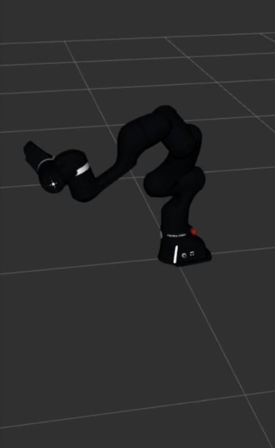

Motion Planning and Robot Control
Franka Emika Manipulator Motion Planning
Built a fully simulated motion-planning framework for the Franka Emika FP3 manipulator using ROS2 Humble, MoveIt2, Python, and C++. The system supports Cartesian task-space trajectory generation, interactive pose goals, smooth execution, and real-time collision and singularity monitoring, with an architecture designed for future physical-hardware deployment.
